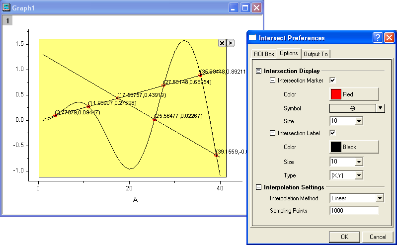

Minitool Kurvenschnittpunkte
Gadget-Intersect
Verwenden Sie das Minitool Kurvenschnittpunkte, um die Kurvenschnittpunkte der Eingabekurven in der grafischen Datenauswahl zu berechnen. Dieses Minitool ist im Menü Minitools verfügbar, wenn ein Grafikfenster aktiv ist.

ROI-Feld
| Formposition |
Legen Sie den Bereich in X-Richtung mit Hilfe der X1- und X2-Werte und den Bereich in Y-Richtung mit Hilfe der Y1- und Y2-Werte fest. |
| Toolname zeigen |
Legen Sie fest, ob der Name des Minitools oben am Rechteck im Diagramm angezeigt wird. Der Name des Minitools kann in den Einstellungen festgelegt werden. |
| Füllfarbe |
Legen Sie die Farbe des Rechtecks fest, das dem Diagramm hinzufügt wird. Siehe die Liste der Farben. |
Optionen
Anzeige der Kurvenschnittpunkte
Legen Sie fest, wie die Kurvenschnittpunkte angezeigt werden.
Markierungen der Kurvenschnittpunkte
Aktivieren Sie dieses Kontrollkästchen, um die Schnittpunkte mit den Symbolen zu markieren. Farbe, Form und Größe der Symbole können benutzerdefiniert angepasst werden.
Beschriftung der Kurvenschnittpunkte
Aktivieren Sie dieses Kontrollkästchen, um Beschriftungen zu den Kurvenschnittpunkten hinzuzufügen.
| Farbe |
Legt die Farbe des Beschriftungstexts fest. |
| Umfang |
Legt die Größe des Beschriftungstexts fest. |
| Typ |
Kennzeichnet den Beschriftungstyp (z.B. X, Y oder (X,Y)). |
| Drehen (Grad) |
Wählen Sie den Drehgrad der Beschriftungen in der Auswahlliste aus. |
| Stellen |
Legen Sie die Stellen der Beschriftung fest.- Standarddezimalstellen: Es werden alle Stellen für die Beschriftung der Kurvenschnittpunkte angezeigt (Standard).
- Dezimalstellen festlegen = : Die Anzahl der Stellen, die nach dem Dezimalzeichen angezeigt werden. Geben Sie den gewünschten Wert in das zugehörige Textfeld ein.
- Signifikante Stellen = : Die Anzahl der angezeigten Stellen Geben Sie den gewünschten Wert in das zugehörige Textfeld ein.
|
 |
- Nach Klicken auf Punkte markieren werden die Beschriftungen der Kurvenschnittpunkte zum Diagramm hinzugefügt. Das Objektelement RectIntersectMarker wird in der Objektverwaltung hinzugefügt (Modus Diagrammobjekte zeigen). Mehrmaliges Markieren von Punkten wird mehrere Markierungsobjekte hinzufügen.

- Wenn Sie diese Beschriftungen benutzerdefiniert anpassen möchten, können Sie:
- doppelt auf sie klicken, um den Dialog Markierungseigenschaften zu öffnen.
oder
- mit der rechten Maustaste auf RectIntersectMarker in der Objektverwaltung klicken und Eigenschaften im Kontextmenü wählen, um den Dialog Markierungseigenschaften zu öffnen.

- Wählen Sie eine beliebige Beschriftung der Kurvenschnittpunkte durch Anklicken aus, um die Position aller Beschriftungen durch Ziehen verschieben zu können. Wenn die Beschriftungen nicht gleichzeitig über punktmarkiert sind, werden sie nicht zusammen verschoben. Wenn Sie nur eine Beschriftung verschieben möchten, können Sie die Strg-Taste gedrückt halten, die Beschriftung anklicken und sie verschieben.
- Wählen Sie eine beliebige Beschriftung der Kurvenschnittpunkte durch Anklicken aus und dann im Kontextmenü Löschen, um diese Beschriftungen zu löschen. Durch Klicken mit der rechten Maustaste auf RectIntersectMarker in der Objektverwaltung und Wählen von Löschen können die Beschriftungen auch gelöscht werden.
|
Interpolationseinstellungen
| Interpolationsmethode |
Legt die Interpolationsmethode für die Eingabekurven fest. Weitere Informationen zu den drei Methoden finden Sie auf der Hilfeseite Interpolieren und Extrapolieren. |
| Abtastpunkte |
Legen Sie die Anzahl der zu interpolierenden Datenpunkte fest. |
Ausgabe in
| Skriptfenster |
Aktivieren Sie das Kontrollkästchen, um die Ergebnisse im Skriptfenster auszugeben. |
| Ergebnisblattname |
Legen Sie das Ausgabeergebnisblatt fest:- Wenn Sie eine neue Ausgabe erzeugen, werden die Ergebnisse standardmäßig in [%H-Intersect]Result (hier bezeichnet %H den Kurznamen des Quelldiagramms) ausgegeben, aber es können auch andere Mappen und Blätter festgelegt werden. Falls die Mappe und das Blatt nicht existieren, werden sie bei der Ausgabe erstellt.
- Alternativ können Sie auf die Ausklappschaltfläche
 rechts von Ergebnisblattname klicken und Blatt in Eingabemappe wählen. Das Bearbeitungsfeld wird mit [<input>]Result gefüllt. Wenn Sie eine neue Ausgabe erzeugen, werden die Ergebnisse in ein Blatt mit dem Namen Result in der Quellmappe ausgegeben. rechts von Ergebnisblattname klicken und Blatt in Eingabemappe wählen. Das Bearbeitungsfeld wird mit [<input>]Result gefüllt. Wenn Sie eine neue Ausgabe erzeugen, werden die Ergebnisse in ein Blatt mit dem Namen Result in der Quellmappe ausgegeben.
|
Ausklappmenü
Klicken Sie auf die dreieckige Schaltfläche  in der oberen rechten Ecke der grafischen Datenauswahl, um das Menü zu öffnen. Die Menüoptionen umfassen:
in der oberen rechten Ecke der grafischen Datenauswahl, um das Menü zu öffnen. Die Menüoptionen umfassen:
| Neue Ausgabe |
Ergebnisse werden in dem festgelegten Arbeitsblatt ausgegeben. |
| Zum Berichtsarbeitsblatt gehen |
Das Berichtsarbeitsblatt wird aktiviert. |
| Ausgabe in Zwischenablage |
Wenn diese Option ausgewählt ist (Menüelement aktiviert), wird die Neue Ausgabe in der Zwischenablage abgelegt. |
| Punkte aufzeichnen |
Die in der grafischen Datenauswahl gefundenen Kurvenschnittpunkte werden gekennzeichnet. |
| Daten ändern |
Die Anpassungsdaten/Zeichnung wird geändert. Standard ist, dass alle Zeichnungen im aktuellen Layer ausgewählt sind.- Entfernen Sie das Häkchen vor Alle Zeichnungen, um alle zu deaktivieren.
- Positionieren Sie das Häkchen vor einer bestimmten Zeichnung, um diese Zeichnung zu aktivieren.
- Klicken Sie auf Auswählen oder Mehr..., um den Dialog Diagramme auswählen aufzurufen.
|
| Auf gesamten Bereich der Zeichnung(en) erweitern |
Erweitert die grafische Datenauswahl auf den gesamten Diagrammbereich. |
| Design speichern unter |
Die Einstellungen werden als Design gespeichert. |
| Als <Standard> speichern |
Die Einstellungen werden als Standarddesign gespeichert. |
| Design laden |
Die Einstellungen werden aus einer Designdatei geladen. |
| Einstellungen |
Der Dialog Kurvenschnittpunkte Einstellungen wird geöffnet. |